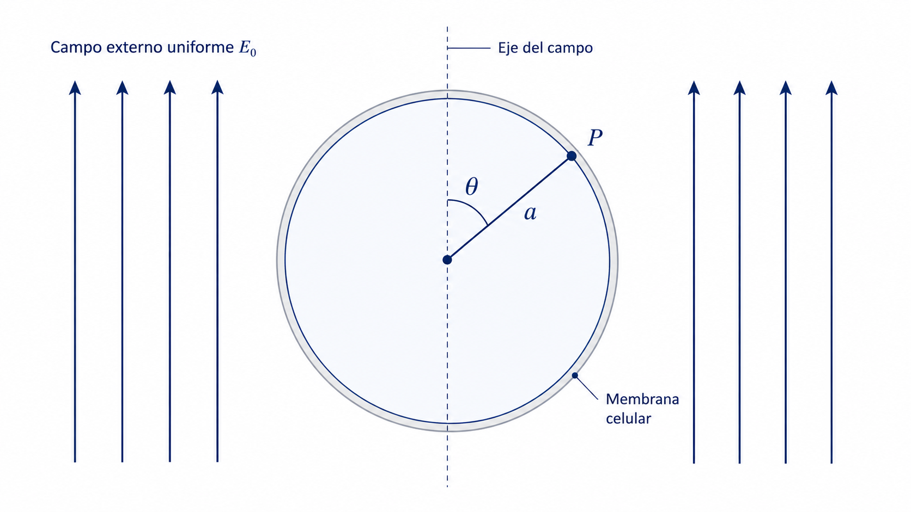
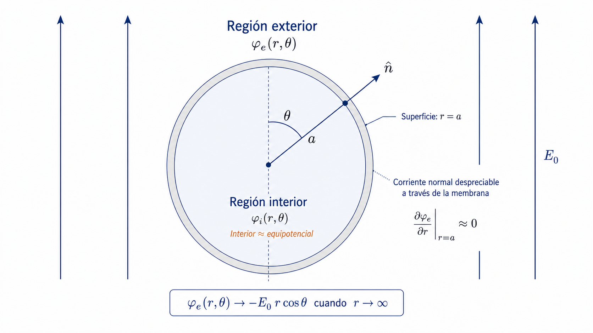
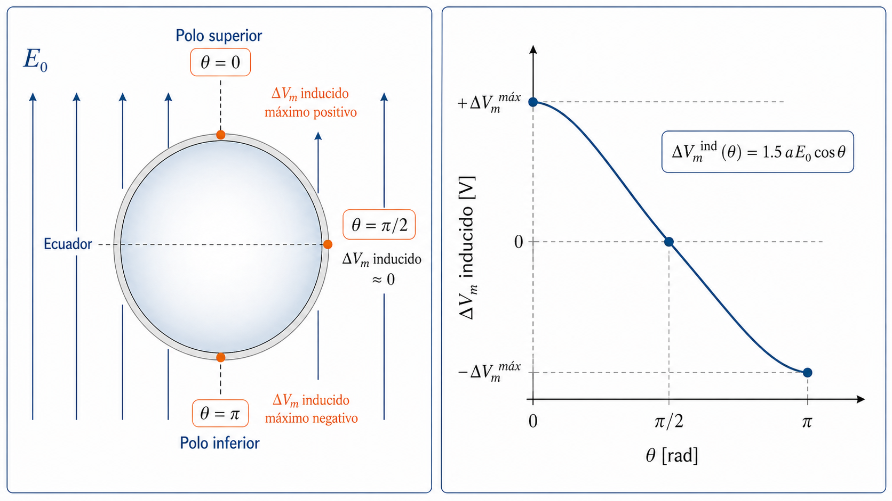

Ecuación de Schwan desde Laplace
1 Objetivo del módulo
Este módulo complementa la clase presencial mostrando cómo se obtiene, en una aproximación cuasiestacionaria, la expresión del voltaje transmembrana inducido en una célula aproximadamente esférica sometida a un campo eléctrico externo uniforme.
El objetivo no es presentar una teoría electrostática completamente general, sino construir una deducción física clara y útil que permita entender de dónde proviene la ecuación de Schwan y cómo deben interpretarse sus variables.
2 Resultado central
El resultado de interés es la expresión aproximada:
\[ \Delta V_m^{\mathrm{ind}}(\theta) \approx f\,a\,E_0\cos\theta \]
donde, para una célula esférica ideal en el régimen cuasiestacionario,
\[ f \approx 1.5 \]
Por tanto,
\[ \Delta V_m^{\mathrm{ind}}(\theta) \approx 1.5\,a\,E_0\cos\theta \]
Esta ecuación muestra que el voltaje transmembrana inducido depende linealmente del radio celular \(a\), de la magnitud del campo externo \(E_0\) y de la posición angular \(\theta\) sobre la membrana.
3 Variables y unidades
| Variable | Significado físico | Unidad SI |
|---|---|---|
| \(a\) | Radio celular | m |
| \(E_0\) | Magnitud del campo eléctrico externo uniforme | V/m |
| \(\theta\) | Ángulo polar medido respecto al eje del campo | rad |
| \(r\) | Coordenada radial | m |
| \(\phi\) | Potencial eléctrico | V |
| \(\phi_e(r,\theta)\) | Potencial eléctrico en la región exterior | V |
| \(\phi_i(r,\theta)\) | Potencial eléctrico en la región interior | V |
| \(\Delta V_m^{\mathrm{ind}}\) | Voltaje transmembrana inducido | V |
| \(f\) | Factor geométrico de forma | adimensional |
| \(A\), \(B\), \(C\) | Constantes de integración determinadas por las condiciones físicas | dependen de la expresión |
4 Planteamiento físico
Consideremos una célula aproximadamente esférica de radio \(a\), inmersa en un medio conductor y expuesta a un campo eléctrico externo uniforme de magnitud \(E_0\).
La Figura 1 introduce la geometría básica del problema. El punto \(P\) sobre la membrana queda identificado mediante el ángulo polar \(\theta\), medido respecto al eje del campo eléctrico aplicado.

Usaremos las siguientes aproximaciones:
- La célula se aproxima como una esfera.
- El campo externo aplicado es uniforme.
- El problema posee simetría axial respecto al eje del campo.
- La membrana es delgada comparada con el radio celular.
- La membrana se trata como una barrera poco conductora en el límite cuasiestacionario.
- No consideramos, en este primer modelo, formación dinámica de poros ni cambios no lineales de conductividad.
5 Ecuación de Laplace
En una región conductora sin acumulación volumétrica de carga libre, el potencial eléctrico satisface la ecuación de Laplace:
\[ \nabla^2 \phi = 0 \]
Como el problema tiene simetría axial, el potencial depende de \(r\) y \(\theta\), pero no del ángulo azimutal. En coordenadas esféricas, para un problema sin dependencia azimutal, la ecuación de Laplace se escribe como:
\[ \frac{1}{r^2} \frac{\partial}{\partial r} \left( r^2\frac{\partial \phi}{\partial r} \right) + \frac{1}{r^2\sin\theta} \frac{\partial}{\partial \theta} \left( \sin\theta \frac{\partial \phi}{\partial \theta} \right) =0 \]
El campo externo uniforme impone una dependencia angular proporcional a \(\cos\theta\). Por esta razón, para el modo dipolar dominante, se buscan soluciones de la forma:
\[ \phi(r,\theta)=R(r)\cos\theta \]
Al sustituir esta forma en la ecuación de Laplace se obtiene una ecuación radial cuya solución general para el término dipolar es:
\[ R(r)=C_1 r+\frac{C_2}{r^2} \]
Por tanto, la solución dipolar general puede escribirse como:
\[ \phi(r,\theta) = \left( C_1 r+\frac{C_2}{r^2} \right)\cos\theta \]
Esta forma contiene dos contribuciones:
- un término proporcional a \(r\cos\theta\), asociado con un campo uniforme;
- un término proporcional a \(\dfrac{\cos\theta}{r^2}\), asociado con la perturbación dipolar causada por la célula.
6 Potencial exterior
En la región exterior a la célula, el potencial debe parecerse al de un campo uniforme cuando estamos lejos de la célula.
Si el campo externo uniforme apunta a lo largo del eje polar, el potencial lejano puede escribirse como:
\[ \phi_{\infty}(r,\theta)=-E_0 r\cos\theta \]
Por tanto, una forma compatible con el campo uniforme lejano es:
\[ \phi_e(r,\theta) = \left( -E_0 r+\frac{A}{r^2} \right)\cos\theta, \qquad r\ge a \]
donde \(A\) es una constante que se determina con las condiciones de frontera.
El término
\[ -E_0 r\cos\theta \]
representa el campo eléctrico uniforme aplicado, mientras que el término
\[ \frac{A}{r^2}\cos\theta \]
representa la perturbación inducida por la presencia de la célula.
7 Potencial interior
En la región interior, la solución debe permanecer finita en \(r=0\). Por esa razón, se descarta el término proporcional a \(1/r^2\), pues diverge en el origen.
La solución interior se escribe como:
\[ \phi_i(r,\theta) = -B\,r\cos\theta+C, \qquad r\le a \]
donde \(B\) representa la magnitud de un posible campo uniforme interno y \(C\) es una constante de referencia del potencial.
8 Condiciones físicas de frontera
La Figura 2 resume las condiciones físicas empleadas en la deducción simplificada.

8.1 Condición 1: campo uniforme lejos de la célula
Lejos de la célula, el potencial exterior debe tender al potencial del campo uniforme aplicado:
\[ \phi_e(r,\theta)\to -E_0 r\cos\theta \qquad \text{cuando} \qquad r\to\infty \]
Esta condición ya está incorporada en la expresión:
\[ \phi_e(r,\theta) = \left( -E_0 r+\frac{A}{r^2} \right)\cos\theta \]
porque el término \(A/r^2\) desaparece cuando \(r\) crece mucho.
8.2 Condición 2: interior aproximadamente equipotencial
En el límite cuasiestacionario y para una membrana poco conductora, el interior celular se aproxima como equipotencial. Esto significa que el campo eléctrico interno es pequeño:
\[ \mathbf{E}_i=-\nabla\phi_i\approx 0 \]
Por tanto, el potencial interior se aproxima como una constante:
\[ \phi_i(r,\theta)\approx C \]
Comparando con la forma general interior,
\[ \phi_i(r,\theta) = -B\,r\cos\theta+C \]
esto implica:
\[ B\approx 0 \]
Entonces,
\[ \phi_i(r,\theta)\approx C \]
Para simplificar la referencia de potencial, podemos elegir:
\[ C=0 \]
Esta elección no cambia la física, porque el potencial eléctrico siempre se define salvo una constante arbitraria.
8.3 Condición 3: corriente normal despreciable a través de la membrana
En esta aproximación, la membrana actúa como una barrera poco conductora. Por tanto, la componente normal de corriente a través de la membrana se considera despreciable.
Como el campo eléctrico se relaciona con el potencial mediante:
\[ \mathbf{E}=-\nabla\phi \]
y la componente radial del campo es proporcional a
\[ E_r=-\frac{\partial \phi}{\partial r} \]
una forma simplificada de imponer flujo normal despreciable en la superficie \(r=a\) es:
\[ \left. \frac{\partial \phi_e}{\partial r} \right|_{r=a} \approx 0 \]
Esta condición se aplica al potencial exterior:
\[ \phi_e(r,\theta) = \left( -E_0 r+\frac{A}{r^2} \right)\cos\theta \]
9 Determinación de la constante exterior \(A\)
Derivamos el potencial exterior respecto a \(r\):
\[ \frac{\partial \phi_e}{\partial r} = \frac{\partial}{\partial r} \left[ \left( -E_0 r+\frac{A}{r^2} \right)\cos\theta \right] \]
Como \(\cos\theta\) no depende de \(r\),
\[ \frac{\partial \phi_e}{\partial r} = \left[ \frac{\partial}{\partial r} \left( -E_0 r+\frac{A}{r^2} \right) \right]\cos\theta \]
Derivando término a término:
\[ \frac{\partial}{\partial r} \left( -E_0 r \right) = -E_0 \]
y
\[ \frac{\partial}{\partial r} \left( \frac{A}{r^2} \right) = \frac{\partial}{\partial r} \left( A r^{-2} \right) = -2A r^{-3} = -\frac{2A}{r^3} \]
Por tanto,
\[ \frac{\partial \phi_e}{\partial r} = \left( -E_0-\frac{2A}{r^3} \right)\cos\theta \]
Ahora aplicamos la condición de frontera en \(r=a\):
\[ \left. \frac{\partial \phi_e}{\partial r} \right|_{r=a} \approx 0 \]
Entonces:
\[ \left( -E_0-\frac{2A}{a^3} \right)\cos\theta = 0 \]
Para que esta condición se cumpla para cualquier \(\theta\), el factor entre paréntesis debe anularse:
\[ -E_0-\frac{2A}{a^3}=0 \]
Despejamos \(A\):
\[ -\frac{2A}{a^3}=E_0 \]
\[ 2A=-E_0a^3 \]
\[ A=-\frac{E_0a^3}{2} \]
10 Potencial exterior sobre la superficie celular
Sustituimos el valor de \(A\) en el potencial exterior:
\[ \phi_e(r,\theta) = \left( -E_0 r + \frac{-E_0a^3/2}{r^2} \right)\cos\theta \]
Por tanto,
\[ \phi_e(r,\theta) = \left( -E_0 r - \frac{E_0a^3}{2r^2} \right)\cos\theta \]
Ahora evaluamos sobre la superficie celular, es decir, en \(r=a\):
\[ \phi_e(a,\theta) = \left( -E_0 a - \frac{E_0a^3}{2a^2} \right)\cos\theta \]
Como
\[ \frac{a^3}{a^2}=a \]
entonces:
\[ \phi_e(a,\theta) = \left( -E_0 a - \frac{E_0a}{2} \right)\cos\theta \]
Factorizando \(E_0a\):
\[ \phi_e(a,\theta) = -\left( 1+\frac{1}{2} \right)E_0a\cos\theta \]
Como
\[ 1+\frac{1}{2}=\frac{3}{2} \]
se obtiene:
\[ \phi_e(a,\theta) = -\frac{3}{2}E_0a\cos\theta \]
11 Voltaje transmembrana inducido
Definimos el voltaje transmembrana inducido como la diferencia entre el potencial justo al interior y justo al exterior de la membrana:
\[ \Delta V_m^{\mathrm{ind}}(\theta) = \phi_i(a,\theta)-\phi_e(a,\theta) \]
Bajo la aproximación de interior equipotencial y con la elección \(C=0\),
\[ \phi_i(a,\theta)\approx 0 \]
Entonces:
\[ \Delta V_m^{\mathrm{ind}}(\theta) = 0 - \left( -\frac{3}{2}E_0a\cos\theta \right) \]
Por tanto:
\[ \Delta V_m^{\mathrm{ind}}(\theta) = \frac{3}{2}E_0a\cos\theta \]
o, de manera equivalente,
\[ \Delta V_m^{\mathrm{ind}}(\theta) = 1.5\,a\,E_0\cos\theta \]
Esta es la forma clásica de la ecuación de Schwan para una célula esférica ideal en el régimen cuasiestacionario:
\[ \Delta V_m^{\mathrm{ind}}(\theta) \approx f\,a\,E_0\cos\theta \]
con
\[ f\approx 1.5 \]
Nota sobre el signo:
El signo exacto depende de la convención usada para definir el voltaje transmembrana. En este módulo se usa:\[ \Delta V_m=\phi_{\text{interior}}-\phi_{\text{exterior}} \]
Si se adopta la convención opuesta, la expresión cambia de signo, pero la dependencia angular y la magnitud física permanecen iguales.
12 Interpretación biofísica de la dependencia angular
La Figura 3 muestra la dependencia angular del voltaje transmembrana inducido predicha por la ecuación de Schwan.

La ecuación
\[ \Delta V_m^{\mathrm{ind}}(\theta) = 1.5\,a\,E_0\cos\theta \]
predice una variación cosenoidal sobre la superficie celular.
12.1 Máximo positivo
En el polo superior, donde
\[ \theta=0 \]
se cumple que:
\[ \cos(0)=1 \]
Por tanto:
\[ \Delta V_m^{\mathrm{ind}}(0) = 1.5\,a\,E_0 \]
12.2 Valor nulo en el ecuador
En el ecuador celular, donde
\[ \theta=\frac{\pi}{2} \]
se cumple que:
\[ \cos\left(\frac{\pi}{2}\right)=0 \]
Por tanto:
\[ \Delta V_m^{\mathrm{ind}}\left(\frac{\pi}{2}\right) = 0 \]
12.3 Máximo negativo
En el polo inferior, donde
\[ \theta=\pi \]
se cumple que:
\[ \cos(\pi)=-1 \]
Por tanto:
\[ \Delta V_m^{\mathrm{ind}}(\pi) = -1.5\,a\,E_0 \]
Esto significa que la polarización inducida es máxima en magnitud en los polos y se anula en el ecuador. Por ello, la permeabilización suele iniciarse en regiones de la membrana más alineadas con el campo eléctrico aplicado.
13 Ejemplo numérico
Supongamos una célula con radio:
\[ a=10\,\mu\text{m} \]
Convertimos a metros:
\[ a=10\times 10^{-6}\,\text{m} \]
\[ a=1.0\times 10^{-5}\,\text{m} \]
Supongamos un campo externo:
\[ E_0=100\,\text{kV/m} \]
Convertimos a unidades SI:
\[ E_0=100\times 10^3\,\text{V/m} \]
\[ E_0=1.0\times 10^5\,\text{V/m} \]
El valor máximo del voltaje inducido en magnitud es:
\[ \left|\Delta V_m^{\mathrm{ind}}\right|_{\max} = 1.5\,a\,E_0 \]
Sustituyendo:
\[ \left|\Delta V_m^{\mathrm{ind}}\right|_{\max} = 1.5 \left( 1.0\times 10^{-5}\,\text{m} \right) \left( 1.0\times 10^5\,\text{V/m} \right) \]
Las unidades se cancelan así:
\[ \text{m}\cdot \frac{\text{V}}{\text{m}}=\text{V} \]
Entonces:
\[ \left|\Delta V_m^{\mathrm{ind}}\right|_{\max} = 1.5\,\text{V} \]
Este orden de magnitud es biofísicamente relevante porque se encuentra en el rango en el que puede esperarse una permeabilización significativa de la membrana celular.
14 Simulación interactiva
En esta simulación se explora la ecuación de Schwan en su forma cuasiestacionaria:
\[ \Delta V_m^{\mathrm{ind}}(\theta)=1.5\,a\,E_0\cos\theta \]
El objetivo es visualizar cómo cambian la magnitud y la distribución angular del voltaje transmembrana inducido cuando se modifican el radio celular, el campo eléctrico externo y un umbral de referencia para permeabilización.
NotaInstrucciones
Use los controles deslizantes para modificar:
- el radio celular \(a\), expresado en micrómetros;
- el campo eléctrico externo \(E_0\), expresado en kV/m;
- el umbral de referencia, expresado en voltios.
La gráfica muestra \(\Delta V_m^{\mathrm{ind}}\) en función del ángulo polar \(\theta\). El tramo naranja indica las regiones angulares donde la magnitud del voltaje inducido supera el umbral seleccionado — es decir, las zonas de la membrana potencialmente más susceptibles a permeabilización bajo ese estímulo.
14.1 Panel interactivo
14.2 Cómo interpretar la simulación
El valor máximo en magnitud se obtiene en los polos de la célula:
\[ \left|\Delta V_m^{\mathrm{ind}}\right|_{\max}=1.5\,a\,E_0 \]
Por tanto:
- si aumenta el radio celular \(a\), aumenta el voltaje inducido;
- si aumenta el campo eléctrico externo \(E_0\), aumenta el voltaje inducido;
- si \(\theta=\pi/2\), entonces \(\cos\theta=0\) y el voltaje inducido se anula;
- si \(|\Delta V_m^{\mathrm{ind}}|\) supera el umbral seleccionado, esa región angular puede interpretarse como una zona potencialmente más susceptible a permeabilización.
AdvertenciaPrecaución física
El umbral usado en esta simulación es solo una referencia didáctica. En células reales, el umbral de permeabilización depende del tipo celular, la duración del pulso, la forma de onda, la temperatura, el medio extracelular, la geometría celular y el estado fisiológico de la membrana.
14.3 Código opcional para Google Colab
El panel anterior funciona directamente en este portal. El siguiente código se ofrece solo para estudiantes que deseen modificar la simulación en Google Colab o en un editor de Python.
import numpy as np
import matplotlib.pyplot as plt
from ipywidgets import interact, FloatSlider
def simular_schwan(radio_um=10.0, campo_kVm=120.0, umbral_V=1.0):
"""
Simulación didáctica de la ecuación de Schwan:
Delta V_m^ind(theta) = 1.5 a E0 cos(theta)
Parámetros:
radio_um : radio celular en micrómetros
campo_kVm : campo eléctrico externo en kV/m
umbral_V : umbral de referencia en V
"""
a = radio_um * 1e-6
E0 = campo_kVm * 1e3
theta = np.linspace(0, np.pi, 400)
delta_V = 1.5 * a * E0 * np.cos(theta)
supera_umbral = np.abs(delta_V) >= umbral_V
plt.figure(figsize=(9, 5))
plt.plot(theta, delta_V, linewidth=2.5, label=r"$\Delta V_m^{ind}(\theta)$")
plt.plot(
theta[supera_umbral],
delta_V[supera_umbral],
linewidth=5,
label="Regiones sobre el umbral"
)
plt.axhline(umbral_V, linestyle="--", label="Umbral positivo")
plt.axhline(-umbral_V, linestyle="--", label="Umbral negativo")
plt.axhline(0, linewidth=0.8)
plt.xticks(
[0, np.pi/2, np.pi],
[r"$0$", r"$\pi/2$", r"$\pi$"]
)
plt.xlabel(r"Ángulo polar $\theta$ [rad]")
plt.ylabel(r"$\Delta V_m^{ind}$ [V]")
plt.title("Voltaje transmembrana inducido según la ecuación de Schwan")
plt.grid(True, alpha=0.3)
plt.legend()
plt.show()
print(f"Radio celular: {radio_um:.2f} µm")
print(f"Campo externo: {campo_kVm:.2f} kV/m")
print(f"Voltaje máximo inducido: {1.5*a*E0:.3f} V")
print(f"Umbral elegido: {umbral_V:.3f} V")
interact(
simular_schwan,
radio_um=FloatSlider(
value=10.0,
min=2.0,
max=30.0,
step=1.0,
description="a [µm]"
),
campo_kVm=FloatSlider(
value=120.0,
min=10.0,
max=300.0,
step=10.0,
description="E0 [kV/m]"
),
umbral_V=FloatSlider(
value=1.0,
min=0.1,
max=3.0,
step=0.1,
description="Umbral [V]"
)
);14.4 Preguntas para explorar
- ¿Qué ocurre con el voltaje inducido máximo cuando se duplica el radio celular?
- ¿Qué ocurre cuando se duplica el campo eléctrico externo?
- ¿Por qué el voltaje inducido se anula cerca del ecuador?
- ¿Para qué combinaciones de \(a\) y \(E_0\) se supera un umbral de \(1\,\text{V}\)?
- ¿Qué regiones de la célula serían más propensas a iniciar permeabilización?
15 Actividad: ecuación de Schwan
Nivel: básico
15.1 Contexto
Para una célula aproximadamente esférica de radio \(a = 10~\mu\mathrm{m}\) en el polo celular (\(\theta = 0\), \(\cos\theta = 1\)):
\[ \Delta V_m^{\mathrm{ind}} = 1.5\,a\,E_0 \]
15.2 Procedimiento
Calcule \(\Delta V_m^{\mathrm{ind}}\) en el polo para los siguientes campos eléctricos y complete la tabla:
| Caso | \(E_0\) | \(\Delta V_m^{\mathrm{ind}}\) |
|---|---|---|
| 1 | \(0.2~\mathrm{kV/cm}\) | ? |
| 2 | \(0.5~\mathrm{kV/cm}\) | ? |
| 3 | \(1.0~\mathrm{kV/cm}\) | ? |
| 4 | \(1.5~\mathrm{kV/cm}\) | ? |
| 5 | \(2.0~\mathrm{kV/cm}\) | ? |
Luego responda:
- ¿Para qué valores de \(E_0\) se supera \(\Delta V_m^{\mathrm{ind}} = 1~\mathrm{V}\)?
- ¿Por qué una célula más grande alcanza mayor voltaje inducido bajo el mismo campo?
- Si el radio fuera \(a = 5~\mu\mathrm{m}\), ¿qué campo se necesitaría para obtener \(1.5~\mathrm{V}\)?
- ¿Por qué el voltaje es máximo en los polos y nulo en el ecuador?
Tip💡 Pista — Actividad ecuación de Schwan
La clave está en las unidades. La ecuación usa metros y V/m, pero los datos están en \(\mu\)m y kV/cm. Convierte antes de sustituir:
\[ 1~\mu\mathrm{m} = 10^{-6}~\mathrm{m} \qquad 1~\mathrm{kV/cm} = \frac{10^3~\mathrm{V}}{10^{-2}~\mathrm{m}} = 10^5~\mathrm{V/m} \]
La ecuación es lineal en \(a\) y en \(E_0\): si uno se duplica, \(\Delta V_m^{\mathrm{ind}}\) se duplica. Usa eso para predecir antes de calcular.
El factor \(\cos\theta\) vale \(1\) en los polos (\(\theta = 0\)) y \(0\) en el ecuador (\(\theta = \pi/2\)).
Nota✓ Respuesta — Actividad ecuación de Schwan
Conversión de unidades:
\[ a = 10~\mu\mathrm{m} = 10^{-5}~\mathrm{m} \qquad 1~\mathrm{kV/cm} = 10^5~\mathrm{V/m} \]
Tabla de resultados (\(\Delta V_m^{\mathrm{ind}} = 1.5 \times 10^{-5} \times E_0\)):
| Caso | \(E_0\) | \(E_0\) [V/m] | \(\Delta V_m^{\mathrm{ind}}\) |
|---|---|---|---|
| 1 | \(0.2~\mathrm{kV/cm}\) | \(2.0\times10^4\) | \(0.300~\mathrm{V}\) |
| 2 | \(0.5~\mathrm{kV/cm}\) | \(5.0\times10^4\) | \(0.750~\mathrm{V}\) |
| 3 | \(1.0~\mathrm{kV/cm}\) | \(1.0\times10^5\) | \(1.500~\mathrm{V}\) |
| 4 | \(1.5~\mathrm{kV/cm}\) | \(1.5\times10^5\) | \(2.250~\mathrm{V}\) |
| 5 | \(2.0~\mathrm{kV/cm}\) | \(2.0\times10^5\) | \(3.000~\mathrm{V}\) |
Respuestas:
El umbral de \(1~\mathrm{V}\) se supera a partir de \(E_0 = 1.0~\mathrm{kV/cm}\) (casos 3, 4 y 5).
La ecuación es lineal en \(a\): \(\Delta V_m^{\mathrm{ind}} \propto a\). Una célula más grande separa más sus polos del centro geométrico bajo el mismo campo, acumulando mayor diferencia de potencial.
Con \(a = 5~\mu\mathrm{m}\), el voltaje se reduce a la mitad. Para obtener \(1.5~\mathrm{V}\): \[E_0 = \frac{1.5}{1.5 \times 5\times10^{-6}} = 2.0~\mathrm{kV/cm}\] Es decir, el campo debe duplicarse.
El factor \(\cos\theta\) vale \(1\) en los polos (\(\theta=0\)) y \(0\) en el ecuador (\(\theta=\pi/2\)). La polarización dipolar inducida por el campo externo es máxima donde el campo es perpendicular a la membrana — que es precisamente en los polos.
16 Referencias
Ver Kotnik et al. (2000), Bilska et al. (2000) y Kotnik et al. (2019).
Referencias
Bilska, Anna O., Karin A. DeBruin, y Wanda Krassowska. 2000. «Theoretical Modeling of the Effects of Shock Duration, Frequency, and Strength on the Degree of Electroporation». Bioelectrochemistry 51 (2): 133-43. https://doi.org/10.1016/S0302-4598(99)00085-1.
Kotnik, Tadej, Damijan Miklavcic, y Lluis M. Mir. 2000. «Analytical Description of Transmembrane Voltage Induced by Electric Fields on Spheroidal Cells». Biophysical Journal 79 (2): 670-79. https://doi.org/10.1016/S0006-3495(00)76325-9.
Kotnik, Tadej, Lea Rems, Mounir Tarek, y Damijan Miklavcic. 2019. «Membrane Electroporation and Electropermeabilization: Mechanisms and Models». Annual Review of Biophysics 48: 63-91. https://doi.org/10.1146/annurev-biophys-052118-115451.